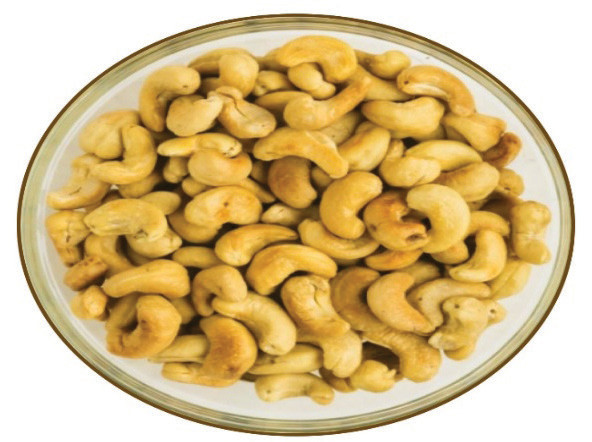

Figure 6.11: Roasted cashew nuts

Activity 6.9
Preparation of roasted cashew nuts
Prepare, cook and serve roasted cashew nuts by following the appropriate methods.
Questions
What is the importance of the following process during roasting nuts?
-
(i) Preheating the oven
-
(ii) Mixing the ingredients
-
(iii) Keeping roasted nuts in a large open utensil
-
(iv) Lining the baking sheet
144